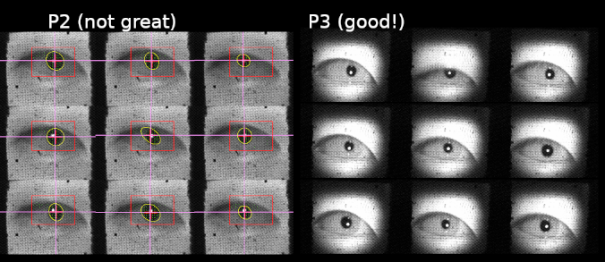
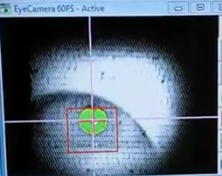
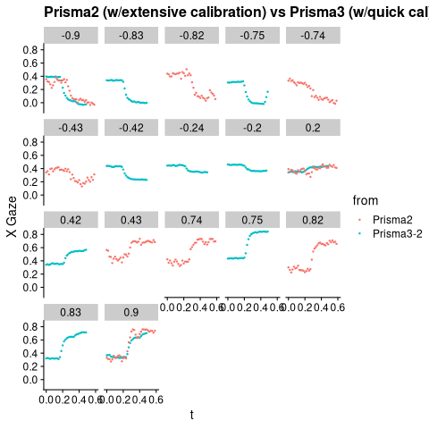

P3 camera has better contrast
The illuminator seems to more focused/less diffuse in P3. It's very dark on the oustides of the illuminated circle, but the contrast within is higher than on P2. This is visible in the calibration image.
 (P3 runs older software and doesn't draw pupil detection. montage is manually constructed)
Arrington pupil detection is noticibly more stable. 
A video of the tracking on P3 does a better job showing how stable pupil detection is: https://photos.app.goo.gl/XwoyX9CgWCVfLDj2A.
X position comparison
This is the best Prisma2 calibration obtained after a lot of tweaking (contrast, brightness, threshold, many points re-calibrated, & w/ fresh eyes) compared to prisma3 on the first go on someone who was already pretty fatigued.
I didn't touch any of the adjustments – P3 pupil detection just worked with the loaded settings!
Despite the low effort, P3 traces have much less noise. (tighter distribution of repored x gaze around fixation points)
P2 and P3 data
source("./plot_files.R")
library(cowplot)
theme_set(theme_cowplot())
rnfn <- function(f) gsub('.*/sub-dan.*run-([12]).*', 'Prisma3-\\1', f) %>% gsub('.*WF.*','Prisma2',.)
infiles <- c(Sys.glob('eye/*dan*txt'), 'eye/sub-WF_tape_run2_32_ses-01_task-EC_run-1.txt')
med_all <- load_files(infiles, fn_fname=rnfn) %>% fix_norm_from_list
med_dot <- med_all %>% filter(event=='dot')
med_dot %>% group_by(fname) %>% summarise(n_dotpos = length(unique(dot)), n_total=n())| fname | n_dotpos | n_total |
|---|---|---|
| Prisma2 | 19 | 1708 |
| Prisma3-1 | 10 | 301 |
| Prisma3-2 | 40 | 1199 |
Raw traces
Good tracking on P2 is still has much less precision/consistency than P3.
med_dot <- med_dot %>% filter(grepl('2',fname), event=='dot') %>%
group_by(fname, trial) %>% mutate(t=t-min(t))
med_dot %>%
filter(pos %in%
c(-0.9, -.83,-.82, -.74,-.75, -.43,-.42,-.2,-.24,
.9, .83, .82, .74,.75, .43, .42, .2)) %>%
ggplot() +
aes(x=t, y=X_CorrectedGaze, color=fname) +
#geom_line(aes(group=paste(fname,trial)), alpha=.4) +
geom_point(size=.5) +
facet_wrap(.~pos) +
lims(x=c(0, .6)) +
labs(title = "Prisma2 (w/extensive calibration) vs Prisma3 (w/quick cal)", y ="X Gaze", color="from")
distribution
tighter (narrow distribution) for P3. Much less noise.
dot_1s <- med_dot %>% filter(t>=.3, t<=.5) %>% mutate(xnorm=X_CorrectedGaze - dot)
p <- ggplot(dot_1s) + aes(x=xnorm) + geom_density(alpha=.5) + lims(x=c(-.25, .25))
p + aes(fill=fname) +
labs(title="dist relative to median fixation during dot (.3-.5s)",
fill="from",
x="x gaze - median fixation (dot presentation)")